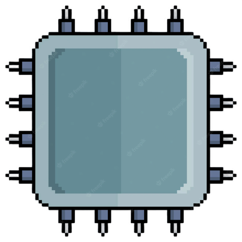

Computer
A computer is a device that accepts information (in the form of digitalized data) and manipulates it for some result based on a program, software, or sequence of instructions on how the data is to be processed. The characteristics of computers that have made them so powerful and universally useful are speed, accuracy, diligence, versatility and storage capaticy.
Diligence
Diligence is the capacity of the computer of performing repetitive tasks without getting tired. A computer is free from tiredness, therefore it can work for hours without creating any errors.
Accuracy
Accuracy refers to the degree of exactness with which computations are made and operations are perfomed. One might spend years in detecting errors in computer calculations or a wrong record.
Processor
Processor speed indicates how fast your computer runs, and is measured in megahertz (MHz) and gigahertz (GHz). Comcast recommends a minimum of 800 MHz for MAc computers and 1.5 GHz for PCs using Windows.